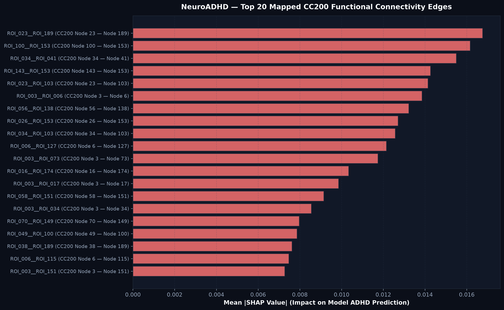
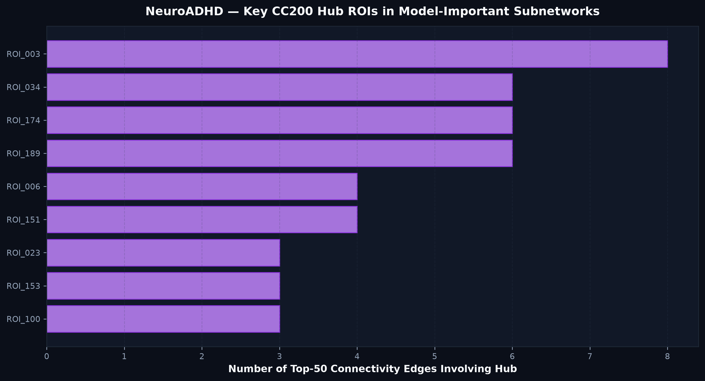

Run ID: run_20261004_185219_atlas_mapping | Atlas: Craddock 200 (CC200) Functional Clustering Parcellation
| Rank | Feature Name | Node Pair | Mean |SHAP| | Model Association Direction |
|---|---|---|---|---|
| 1 | ROI_023__ROI_189 | CC200 Node 23 — Node 189 | 0.0168 | Higher connectivity increases ADHD probability |
| 2 | ROI_100__ROI_153 | CC200 Node 100 — Node 153 | 0.0162 | Higher connectivity increases ADHD probability |
| 3 | ROI_034__ROI_041 | CC200 Node 34 — Node 41 | 0.0155 | Higher connectivity increases ADHD probability |
| 4 | ROI_143__ROI_153 | CC200 Node 143 — Node 153 | 0.0143 | Higher connectivity increases ADHD probability |
| 5 | ROI_023__ROI_103 | CC200 Node 23 — Node 103 | 0.0141 | Higher connectivity increases ADHD probability |
| 6 | ROI_003__ROI_006 | CC200 Node 3 — Node 6 | 0.0139 | Higher connectivity increases ADHD probability |
| 7 | ROI_056__ROI_138 | CC200 Node 56 — Node 138 | 0.0132 | Higher connectivity increases ADHD probability |
| 8 | ROI_026__ROI_153 | CC200 Node 26 — Node 153 | 0.0127 | Higher connectivity increases ADHD probability |
| 9 | ROI_034__ROI_103 | CC200 Node 34 — Node 103 | 0.0126 | Higher connectivity increases ADHD probability |
| 10 | ROI_006__ROI_127 | CC200 Node 6 — Node 127 | 0.0122 | Higher connectivity increases ADHD probability |
| Hub Rank | ROI Identifier | CC200 Node ID | Top-50 Edge Count | All-100 Edge Count | Mean Edge |SHAP| |
|---|---|---|---|---|---|
| 1 | ROI_003 | 3 | 8 | 16 | 0.0050 |
| 2 | ROI_034 | 34 | 6 | 9 | 0.0065 |
| 3 | ROI_174 | 174 | 6 | 9 | 0.0049 |
| 4 | ROI_189 | 189 | 6 | 7 | 0.0066 |
| 5 | ROI_006 | 6 | 4 | 6 | 0.0069 |
| 6 | ROI_151 | 151 | 4 | 5 | 0.0057 |
| 7 | ROI_023 | 23 | 3 | 6 | 0.0068 |
| 8 | ROI_153 | 153 | 3 | 4 | 0.0108 |
| 9 | ROI_100 | 100 | 3 | 4 | 0.0073 |

